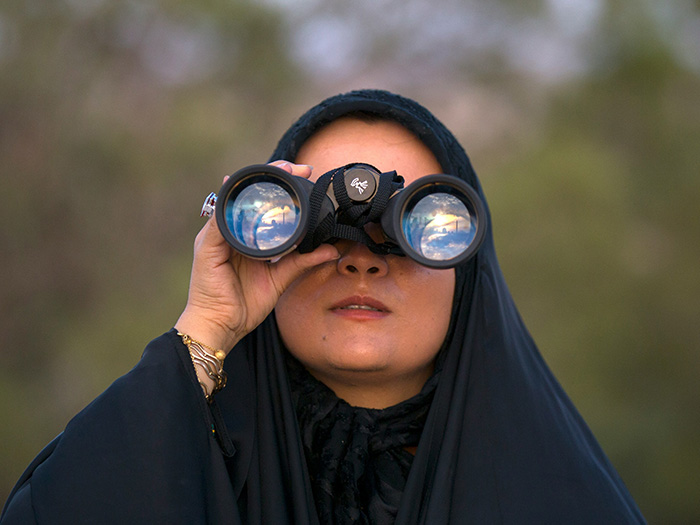

Une passionnée du Maroc

Bonjour ! Je suis une passionnée de voyages qui a eu la chance de découvrir les merveilles du Maroc à travers de nombreuses aventures.
Depuis ma première visite dans les souks colorés de Marrakech il y a dix ans, je suis tombée amoureuse de mon pays aux mille couleurs. Chaque région m'a offert des expériences uniques : des nuits magiques sous les étoiles du Sahara aux randonnées dans l'Atlas, en passant par les rues bleues envoûtantes de Chefchaouen.
À travers ce blog, je partage mes découvertes, mes coups de cœur et mes conseils pratiques pour vous aider à vivre votre propre aventure marocaine. Que vous soyez amateur de culture, de gastronomie, de nature ou d'histoire, le Maroc saura vous séduire.
Ma mission est de vous faire découvrir non seulement les sites touristiques emblématiques, mais aussi les trésors cachés que seuls les voyageurs curieux peuvent dénicher.
"Le voyage est la seule chose qu'on achète qui nous rend plus riche."